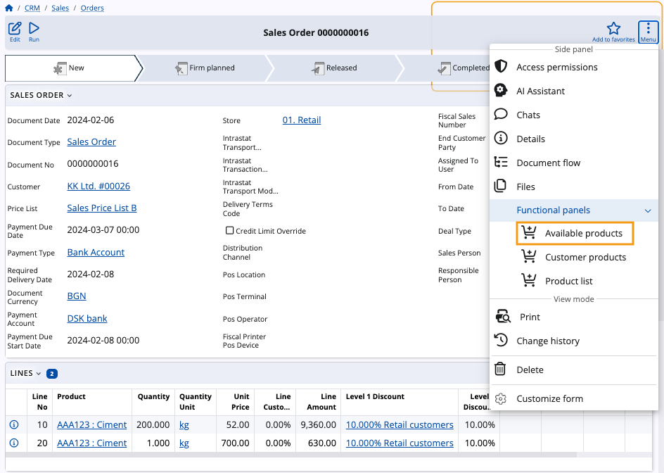
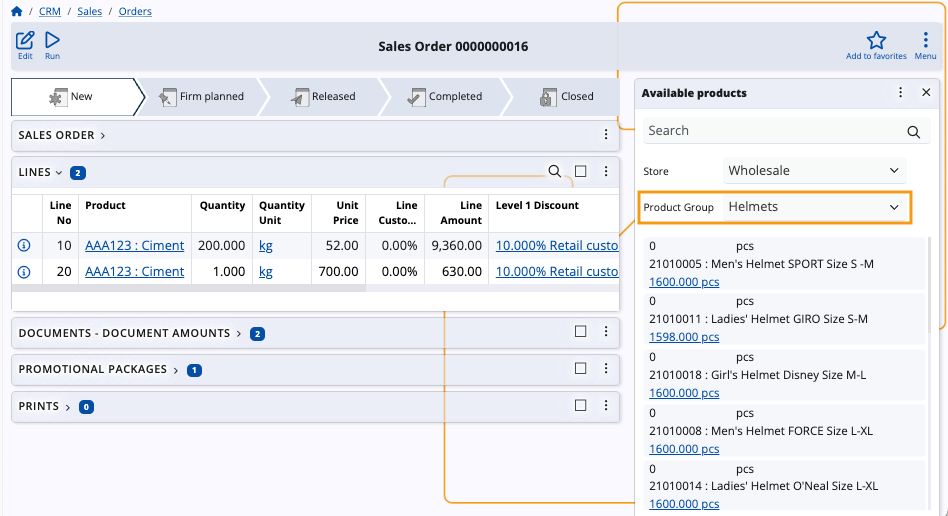
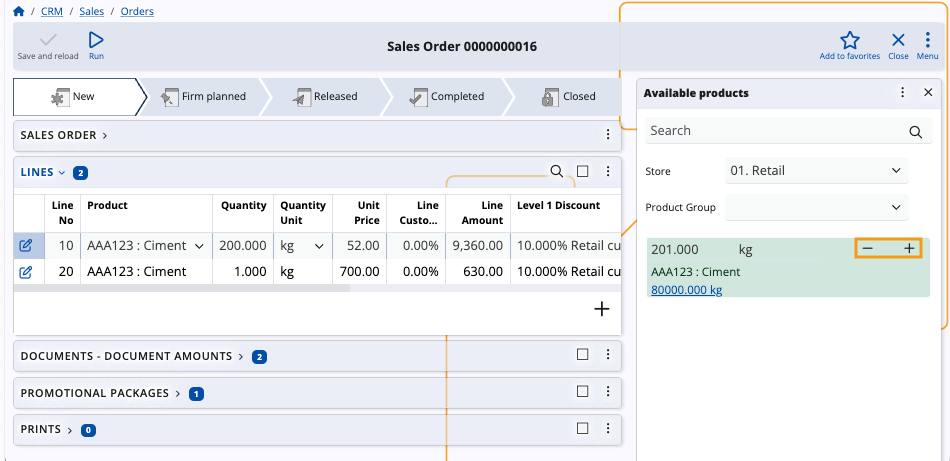
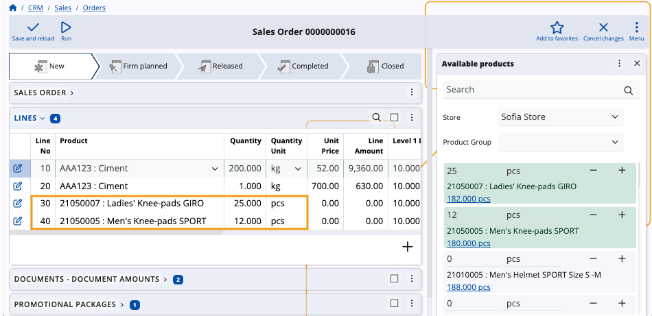

How to use the Available products panel
The Available products functional panel displays a list of products which are in stock for a respective store.
Using it, you can adjust existing product quantities or add new ones in the lines of logistical documents.
Navigation
To reveal the panel, you need to open the document form of a sales order, a purchase order, or another logistical document. Then, choose Available products from the list of Functional panels found within the Menu button.
Note
The panel's buttons will be visible and usable only when you:
- create a new document
- edit an existing document

Panel features
The Available products panel includes a search bar and an option to filter products by Product group.
You can enter quantities manually, adjust them with “+” and “-” buttons, as well as determine their measurement units.
Warning
Available products will be loaded only for a selected store.
Without a store selected, the panel will be empty.

Filter by product group
For convenience, you can filter products available for a store by choosing the product group to which they belong. Once you select a group, only products belonging to it will appear in the list.

Add and remove quantities
The Available products panel offers the ability to add or remove product quantities in the lines of the respective document. Use the “+” and “-” buttons to increase or decrease quantities as needed.

New product quantities are automatically added as new rows in the Lines panel of the respective document.

Note
The screenshots taken for this article are from v24 of the Web Client.